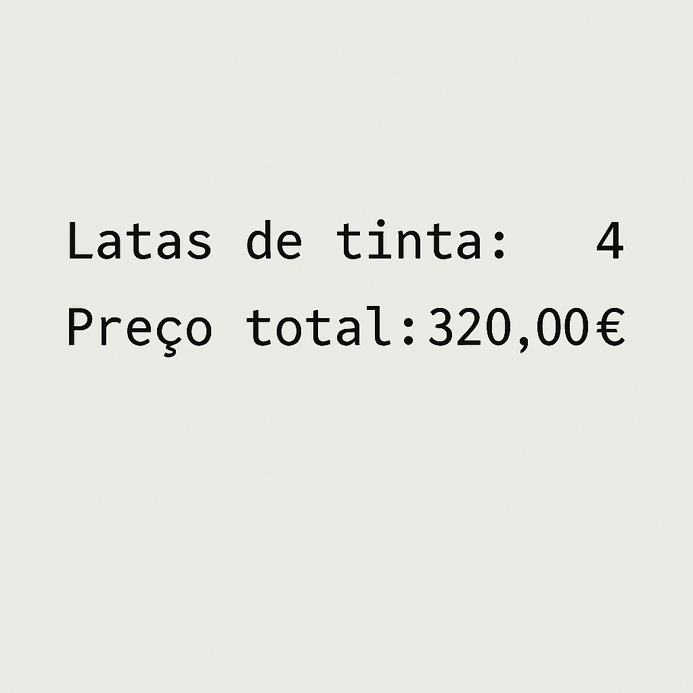
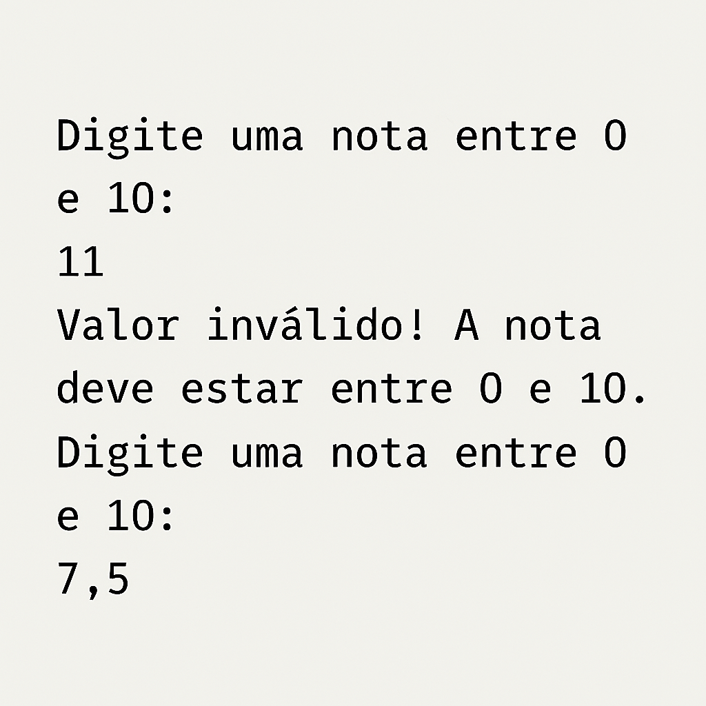
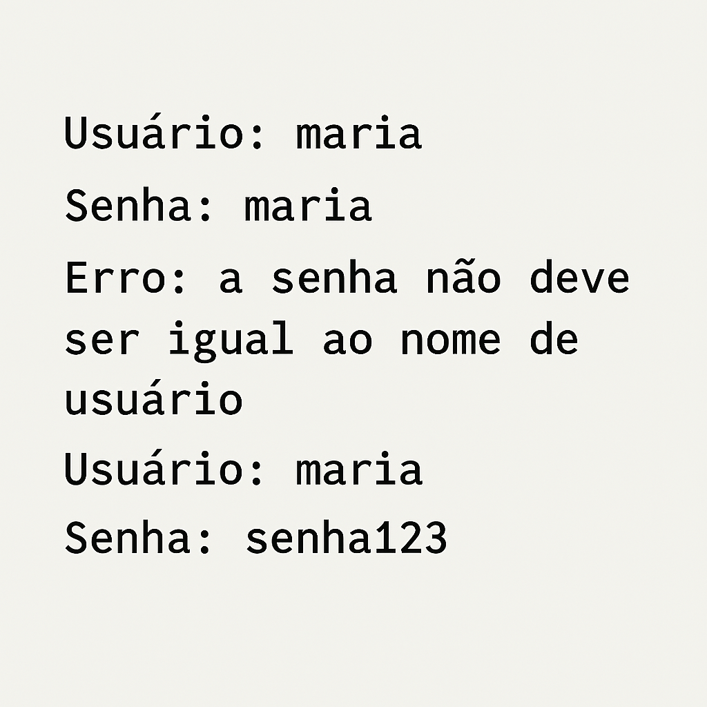
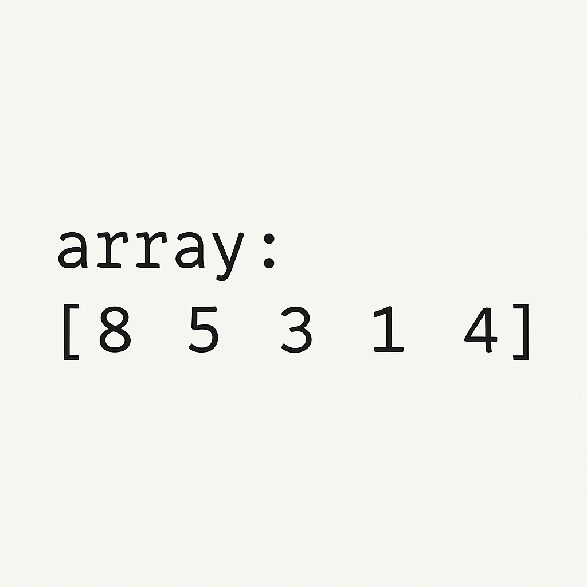
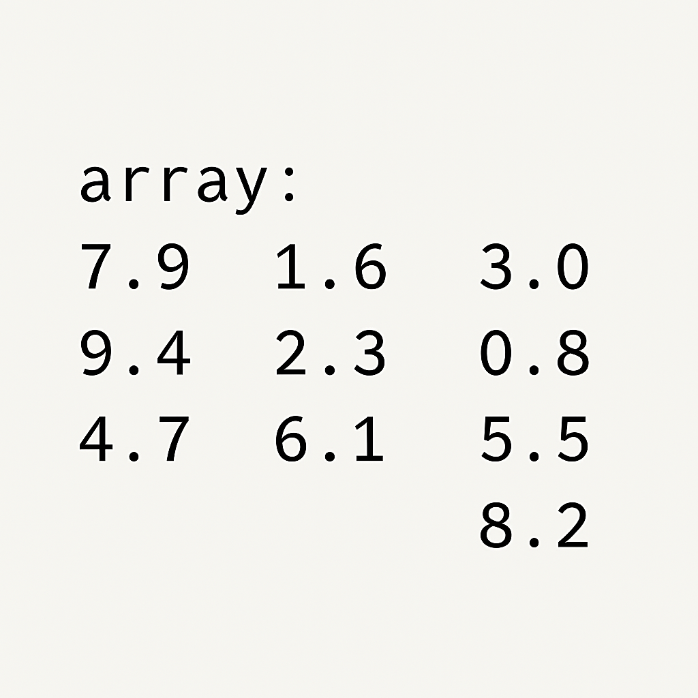
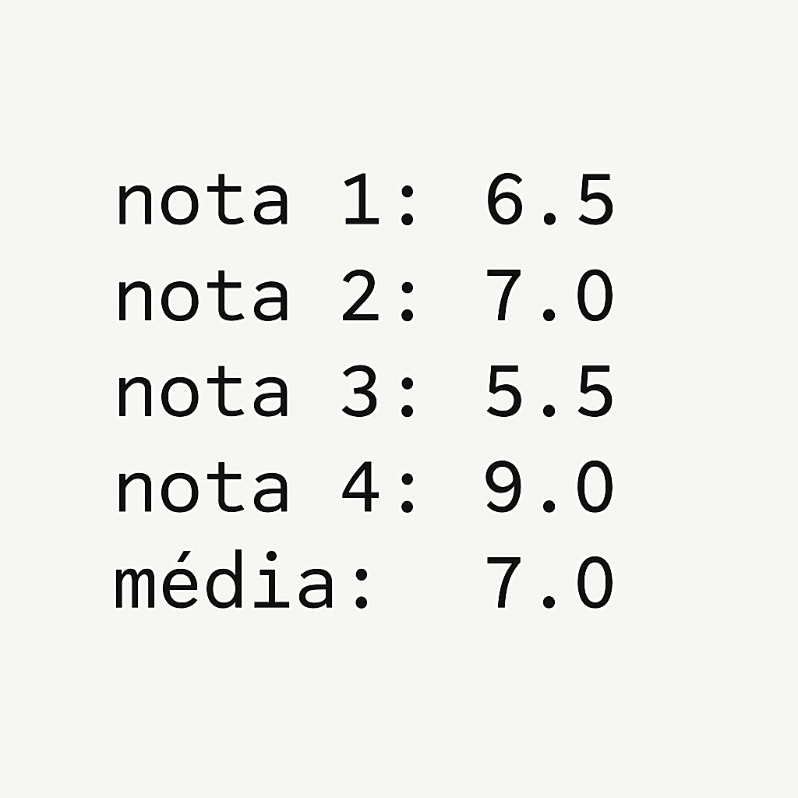

Considerada uma linguagem de alto nível genérica, o C pode ser usado em diversos tipos de projeto,
como a criação de aplicações, sistemas operacionais, drivers, entre outros.
Trata-se de uma linguagem estruturada que se tornou muito popular nos anos 80 — é difícil encontrar arquiteturas para as quais não existam compiladores para o C,
o que garante o seu elevado nível de portabilidade.
Legenda: Exemplo de código C que define a estrutura de um programa simples. Este excerto de código imprime a mensagem "Olá Mundo" em inglês.
Legenda: Vídeo do Youtuber Calleb Curry, que faz uma pequena Introdução da Linguagem C.
Legenda: Vídeo da página Oficial do Programiz, um compilador Online, que explica sobre Funções.
Legenda: Vídeo do Youtuber Calleb Curry que ensina como utilizar Loops em C.
Legenda: Vídeo do Canal de Youtube Bro Code,que dá uma iniciação sobre os Arrays em C.
1.-João Papo-de-Pescador, homem de bem, comprou um microcomputador para controlar o rendimento diário de seu trabalho.
Toda vez que ele traz um peso de peixes maior que o estabelecido pelo regulamento de pesca de Lisboa (50 quilos)
deve pagar uma multa de 4,00€ por quilo excedente.
João precisa que você faça um programa que leia a variável peso (peso de peixes) e calcule o excesso.
Gravar na variável excesso a quantidade de quilos além do limite e na variável multa o valor da multa que João deverá pagar.
Imprima os dados do programa com as mensagens adequadas. (assuma que sera sempre pescado peixe a mais)
Legenda: Exemplo do output do exercício 1,com os quilos em excesso, o valor da multa e o peso total do pescado.
2.-Faça um Programa que pergunte quanto você ganha por hora e o número de horas trabalhadas no mês. Calcule e mostre o total do seu salário no referido mês, sabendo-se que são descontados 11% para a SS, 8% para o IRS , faça um programa que nos dê:
Legenda: Exemplo do output do exercício 2.
3.-Faça um programa para uma loja de tintas. O programa deverá pedir o tamanho em metros quadrados da área a ser pintada. Considere que a cobertura da tinta é de 1 litro para cada 3 metros quadrados e que a tinta é vendida em latas de 18 litros, que custam 80,00€. Informe ao usuário a quantidades de latas de tinta a serem compradas e o preço total.
Legenda: Exemplo do output do exercício 3.
4-Faça um programa que peça uma nota, entre zero e dez. Mostre uma mensagem caso o valor seja inválido e continue pedindo até que o usuário informe um valor válido.
Legenda: Exemplo do output do exercício 4, 1º exercicio de Loops.
5-Faça um programa que leia um nome de usuário e a sua senha e não aceite a senha igual ao nome do usuário, mostrando uma mensagem de erro e voltando a pedir as informações.
Legenda: Exemplo do output do exercício 5, 2º exercicio de Loops.
6-Faça um programa que leia e valide as seguintes informações:
Legenda: Exemplo do output do exercício 6, 3º exercicio de Loops.
7-Faça um Programa que leia um array de 5 números inteiros e mostre-os.
Legenda: Exemplo do output do exercício 7, 1º exercicio de Arrays.
8-Faça um Programa que leia um array de 10 números reais e mostre-os na ordem inversa.
Legenda: Exemplo do output do exercício 8, 2º exercicio de Arrays.
9-Faça um Programa que leia 4 notas, armazene-as num array e mostre as notas e a média na consola
Legenda: Exemplo do output do exercício 9, 3º exercicio de Arrays.
A linguagem C é uma das linguagens de programação mais antigas e com grande influência,
sendo a base para muitas outras linguagens modernas.
Ela é amplamente utilizada em sistemas operacionais,
desenvolvimento de software,aplicações de alto desempenho e muito mais.
Para mais informações consulte W3Schools C.